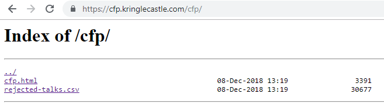

Question 2: Directory Browsing¶
Who submitted (First Last) the rejected talk titled Data Loss for Rainbow Teams: A Path in the Darkness? Please analyze the CFP site to find out. For hints on achieving this objective, please visit Minty Candycane and help her with the The Name Game Cranberry Pi terminal challenge.
Answer: John McClane
Solution¶
Browse to the CFP site.
Click on the CFP link to open https://cfp.kringlecastle.com/cfp/cfp.html
We modified the URL by removing the characters from the end until we got https://cfp.kringlecastle.com/cfp/ and tried browsing to it. This produced the following output:
We clicked on the rejected-talks.csv link to open the file in our browser.
We searched for Data Loss for Rainbow Teams and found the information that we wanted towards the top of the .csv file:
talkCandidateId,request,payload,status,error,timeout,firstName,lastName,title,talkName,approveVotes,rejectVotes
qmt1,0,8040422,200,FALSE,FALSE,Banky,Orford,Marketing Coordinator,Kernel Introspection Spearphishing: Massively Multithreaded,4,8
qmt2,1,8040423,200,FALSE,FALSE,Sarah,Thibodeaux,Event Planner,Crypto or Containers: Abused for Fun and Proft,4,8
qmt3,2,8040424,200,FALSE,FALSE,John,McClane,Director of Security,Data Loss for Rainbow Teams: A Path in the Darkness,1,11
qmt4,3,8040425,200,FALSE,FALSE,Davidde,Yellop,Analyst,Industrial Control Systems Content Filtering: Distributed,5,7
qmt5,4,8040426,200,FALSE,FALSE,Berton,Tupie,Meeting Planner,Rootkits Emailed Malware: Extensible Models,5,7